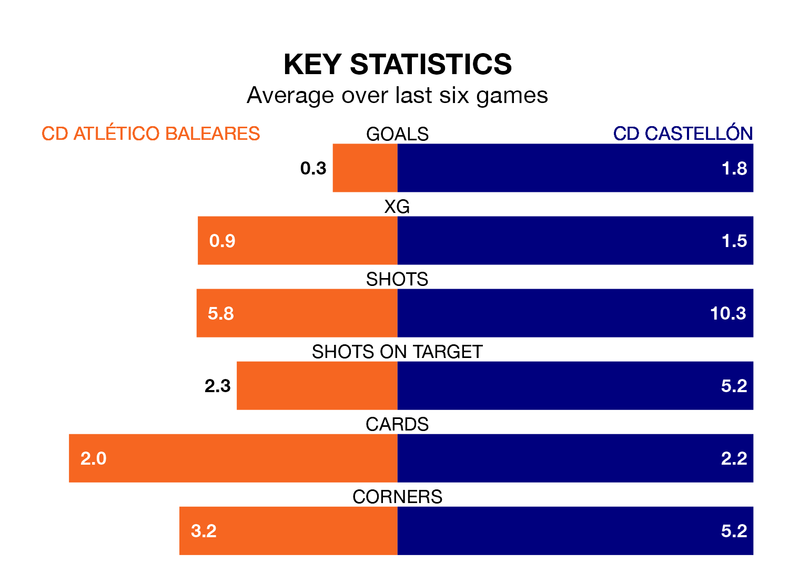

CD Castellón travel to Campo de Son Malferit for Sunday's early match against CD Atlético Baleares looking to bounce back from defeat last time out in Primera Division RFEF Group 2.
Castellón, who sit top of the league after 24 games, fell to a 2-1 away defeat to Mérida AD on February 17.
They face an Atlético Baleares side who also lost their last match, a 3-0 defeat to Atlético Madrid B, and who sit 18th in the table.
With 53 goals in 24 games so far this season, Castellón are the league's highest scorers with 2.2 goals per game. And they are conceding fewer than average, letting in 24 goals at a rate of 1.0 per game.
Atlético Baleares, meanwhile, are below average scorers, with 0.6 goals per game, compared to a league average of 1.1. They have conceded 1.7 goals per game.
In Jesús De Miguel Alameda, the visitors have the league's most on-form striker so far this season. He has notched 15 goals in 23 appearances.
His goal rate of one every 128 minutes is quicker than that of David Rodríguez Sánchez, the home team's top scorer with a goal every 210 minutes, and a total of seven goals in 18 games.
In the last 10 years, Atlético Baleares and Castellón have played each other on seven occasions. Atlético Baleares won one of them, Castellón three, and they drew three times.
On average, Atlético Baleares scored 1.1 goals and Castellón 1.4 in those matches.
Their last meeting was on November 19, when Castellón won 4-2 at home.
Atlético Baleares are in bad form in Primera Division RFEF Group 2, with one win and a draw from their last six games.
With three wins and two draws over that period, Castellón's form is much better – they have taken 11 points from 18, compared to Atlético Baleares's four.
Updated: 10:08 (UTC), 23/02/24